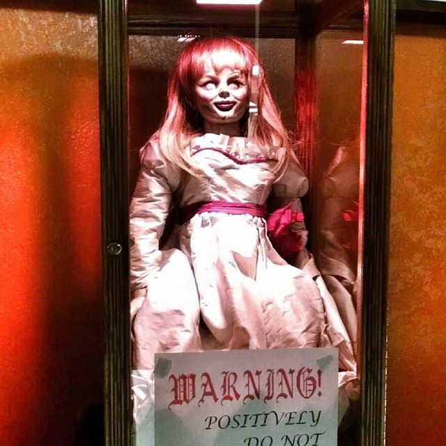

Hace mucho tiempo, en una galaxia muy muy lejana....
El estreno mas esperado del 2017, podremos ver a luke de nuevo en accion?,
de quien es hija rey?, que pasara con la princesa leia?, podra chewbacca aprender a usar la fuerza?, es jar jar binks el ultimo jedi?, yoda y e.t. son hermanos?
Anabelle 2
La malvada muñeca vuelve para aterrorizarnos

Anabelle en su santuario...
Se estrena la secuela de la muñeca poseida
Se espera que tenga el mismo exito que la primera parte, pero por el momento no supera a la saga de chuky el muñeco diabolico
Jumanji 2
La decepcion del siglo
Dwayne Johnson "The Rock"...
Jake Kasdan ha decidido hacer la segunda parte de la obra maestra de Jumanji, de momento no sabemos si tendra exito, lo que si podemos asegurar es que robin williams debe estar revolcandose en su tumba, por lo que le han hecho a su franquicia
Basta con ver el trailer para odiar a esta pelicula, pero sobre todo al director, que utilizo el nombre de Jumanji para realizar este payazesco film